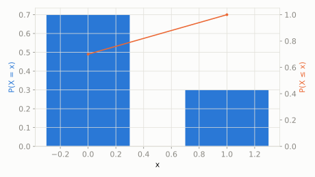

There's a magic gumball machine. Every time you put in a coin, there's a 30% chance you get a shiny golden gumball, and a 70% chance you get a plain one.
If you put in exactly one coin, what's the chance you get the golden gumball?
scipy.stats.bernoulli
The atom of probability: one single yes/no trial. Everything else in the discrete family -- Binomial, Geometric, Negative Binomial, Multinomial -- is Bernoulli repeated, counted, or generalized. If a question has exactly two outcomes and one fixed chance of 'success', it's a Bernoulli trial.
| parameter | default used here | meaning |
|---|---|---|
p | 0.3 | probability of success (the golden gumball) |
There's a magic gumball machine. Every time you put in a coin, there's a 30% chance you get a shiny golden gumball, and a 70% chance you get a plain one.
If you put in exactly one coin, what's the chance you get the golden gumball?
scipy.statsimport scipy.stats as stats
import numpy as np
dist = stats.bernoulli(p=0.3)
print('P(golden gumball):', round(dist.pmf(1), 4))
print('P(plain gumball):', round(dist.pmf(0), 4))